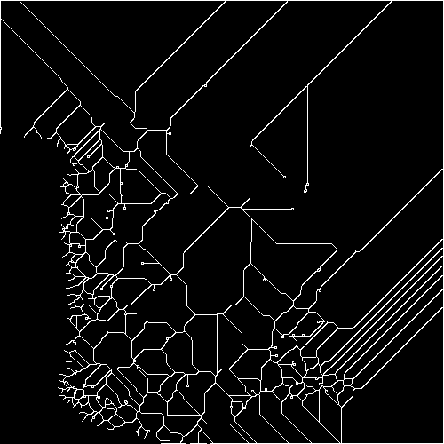
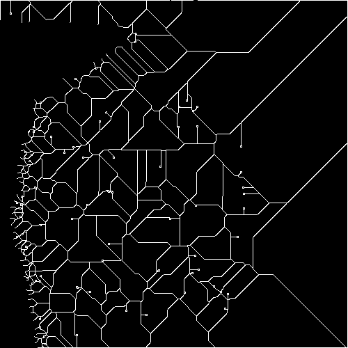

Fingerprint Analysis Workstation (local) — إصدار 2.1
تاريخ ووقت التقرير: 2026-05-04 16:20:14
مرجع قضية / ملف: —
المشغّل / المراجع: —
SHA-256 (الملف الأصلي للبصمة المرجعية):
da8c51f3710b1f3f2badcffc85e89eb649fbb6a6f0922f59235d3eceab3d08db
SHA-256 (الملف الأصلي للبصمة المقارنة):
cd22f87c92a9af937ae7f7eb8dee83ebbb48bd029c22ad06265c6a6a498a8645
المنهجية التقنية (ملخص): تحويل رمادي، تموضع الحجم، CLAHE، إزالة ضوضاء اختيارية، تثنّي Otsu، تعزيز تموجات ببنك Gabor متعدد الاتجاهات، تهليل (thinning)، استخراج نقاط دقيقة (نهاية/تفرع) مع فلترة، ثم مطابقة واحد‑لواحد مع قيود مسافة وزاوية ونوع النقطة. لا يُطبَّق تسجيل هندسي كامل (محاذاة/دوران) بين الصورتين في هذا الإصدار.
| المعامل | القيمة |
|---|---|
| border_margin | 10 |
| min_distance | 10 |
| min_contrast | 15 |
| min_angle_diff | 10 |
| denoise_method | fastNlMeans |
| fast_denoise_h | 10 |
| gauss_ksize | 3 |
| MATCH_DISTANCE_THRESHOLD | 10 |
| MATCH_ANGLE_THRESHOLD_DEG | 45 |


عدد النقاط المستخرجة — المرجعية: 681
عدد النقاط المستخرجة — المقارنة: 632
أزواج مطابقة (واحد‑لواحد): 146
نسبة التشابه (حسب البصمة المقارنة): 23.10%
معامل Dice: 22.24%
التصنيف الفني: الفئة د — دون بلوغ عتبة التشابه المسجّلة
النظام يُخرج مقاييسًا إحصائية لمقارنة تمثيلات رقمية للبصمات وفق إعدادات مسجّلة؛ لا يثبت الهوية وحده ولا يغني عن مراجعة خبير بصمات معتمد وسياسة المختبر والسلطة المختصة.
رمز الحالة الداخلي: NO MATCH